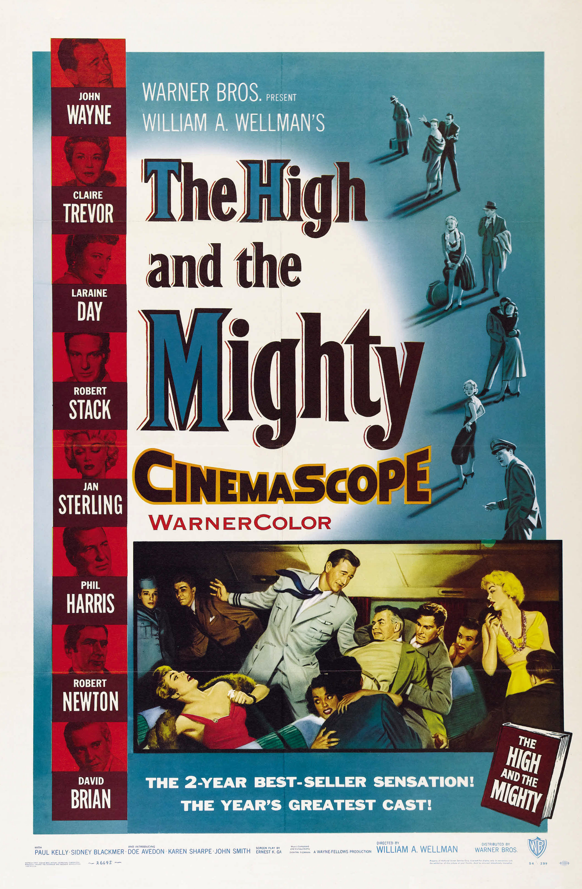

The High and the Mighty
27th Academy Awards
(Oscars 1955)
6 Nominations, 1 Award
| Nominations | ||
|---|---|---|
| Category | Nominees | Result |
| Actress in a Supporting Role | Claire Trevor | Nominated |
| Actress in a Supporting Role | Jan Sterling | Nominated |
| Directing | William Wellman | Nominated |
| Film Editing | Ralph Dawson | Nominated |
| Music (Music Score of a Dramatic or Comedy Picture) | Dimitri Tiomkin | Won |
| Music (Song) "The High And The Mighty" |
Dimitri Tiomkin and Ned Washington | Nominated |